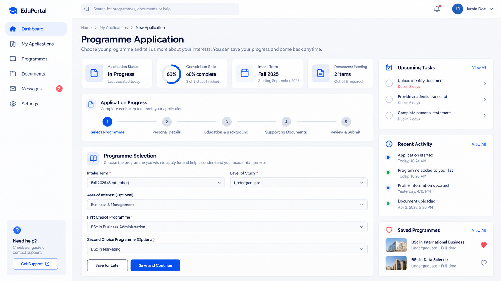

Web application · Education
Online Admission System
Built from scratch with departmental input to digitize and improve admissions.

The problem
The admission process needed to be digitized and its workflow improved.
The approach
Developed the system from scratch and discussed the solution with the relevant departments.
What changed
Digitized the admission process with workflow improvements informed by discussions with the departments involved.
Explore the project
My contribution
I developed the Online Admission System from scratch and worked with the relevant departments to discuss the solution and improve the process.
Project focus
Connect the development work with departmental needs so that digitization also improves the workflow.